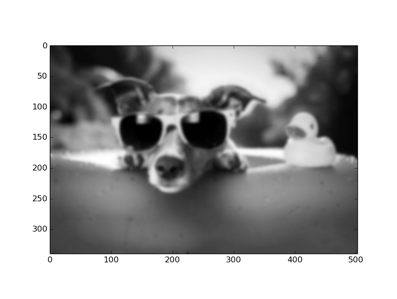

2.2. Matrices¶
Suppose we have \(n\) vectors \(v^1,v^2,\ldots,v^n\in\mathbb R^m\). There are several options available to us for denoting this set, either by writing each one individually as a separate column vector:
or by adopting the more efficient notation of combining all of them into a single \(m\times n\) matrix:
In general, an \(m\times n\) matrix \(A\in\mathbb R^{m\times n}\) is written as:
In the example above, \(A_{ij}=v^j_i\). NumPy has a matrix class to conveniently define
\(m\times n\) matrices, as shown below:
>>> a=np.matrix([[1,2,3],[4,5,6],[7,8,9]])
>>> a
>>> matrix([[1, 2, 3],
[4, 5, 6],
[7, 8, 9]])
Note that NumPy defines the individual elements of the matrix by specifying the rows, not the columns. Such an ordering of the matrix elements is called a row-major ordering. On the other hand, if the data was specified column-by-column, it would be called a column-major ordering. You are probably familiar with the \(n\times n\) identity matrix defined as:
2.2.1. Matrix-Vector Product¶
Let \(x\in\mathbb R^{n\times 1}\) be an \(n\)-dimensional column vector and \(A\in\mathbb R^{m\times n}\) be an \(m\times n\) matrix. The matrix-vector product \(b=Ax\) is the \(m\)-dimensional vector defined as:
Note that all matrices are linear operators, i.e., if \(x,y\in\mathbb R^{n\times 1}\) are two arbitrary \(n\)-dimensional vectors, and \(\alpha\in\mathbb R\) is an arbitrary scalar, then it follows that:
Matrix-vector products can be computed in NumPy using
the dot operator, as shown below:
>>> a=np.matrix([[1,2,3],[4,5,6],[7,8,9]])
>>> b=np.array([4,5,9])
>>> a.dot(b)
array([ 41, 95, 149])
Example: Image Blurring
To illustrate the power of the abstraction that matrix-vector products
provide, we will show an example from image processing where we will
blur an image by casting the problem as a matrix-vector multiplication.
However, first we must outline how to read an image in Python
using the matplotlib package. Consider reading this image:
{kind=link}
>>> import matplotlib.pyplot as plt
>>> I=plt.imread('chill.jpg')
>>> plt.imshow(I)
<matplotlib.image.AxesImage object at 0x7f22b353d390>
>>> plt.show()
The above sequence of commands should display the following image:
{kind=link}
In our case, it is more convenient to operate on grayscale images. We will use the PIL package in Python for this purpose.
>>> import numpy as np
>>> import matplotlib.pyplot as plt
>>> from PIL import Image
>>> fname='chill.jpg'
>>> image = Image.open(fname).convert("L")
>>> arr = np.asarray(image)
>>> plt.imshow(arr, cmap='gray')
<matplotlib.image.AxesImage object at 0x7fa3da005390>
>>> plt.show()
The above commands should display the following image:

To blur the image, we will perform the following simple operation, which replaces the grayscale value at every pixel by the weighted average of its neighbors:
Since our blurring code is substantially more complex than anything else we
have encountered so far, for convenience of execution, we will copy all the
code into a file named blur.py, as shown below:
# blur.py
import numpy as np
import matplotlib.pyplot as plt
from PIL import Image
from scipy.sparse import lil_matrix
# read image file
fname = 'chill.jpg'
image = Image.open(fname).convert("L")
arr = np.asarray(image)
arr.setflags(write = 1)
# initialize blurring matrix
m = arr.shape[0]
n = arr.shape[1]
dofs = m*n
A = lil_matrix((dofs,dofs))
A.setdiag(np.ones(dofs))
for i in range(1,m-1):
for j in range(1,n-1):
A[n*i+j,n*i+j] = 4./8.
A[n*i+j,n*(i-1)+j] = 1./8.
A[n*i+j,n*(i+1)+j] = 1./8.
A[n*i+j,n*i+j-1] = 1./8.
A[n*i+j,n*i+j+1] = 1./8.
A = A.tocsr()
# Blurring function - converts image to a vector, multiplies by
# the blurring matrix, and copies the result back into the image
def blur():
x = np.zeros(shape=(dofs,1))
for i in range(0,m):
for j in range(0,n):
x[n*i+j] = arr[i,j]
y = A.dot(x)
for i in range(0,m):
for j in range(0,n):
arr[i,j] = y[n*i+j]
# Execute the blurring function 20 times
for i in range(0,20):
blur()
# Display the blurred image
plt.imshow(arr,cmap='gray')
plt.show()
Several new concepts have been introduced in the code above. The image array
arr can be thought of as a column vector x so that it can be
multiplied by a matrix. Here, we see the generality of the concept of a
vector – an \(m\times n\) image corresponds to a \(mn\)-dimensional
vector. We first construct a \(mn\times mn\) matrix \(A\) to encode
the blurring action. Since densely allocating this matrix would incur a
substantial memory overhead, we allocate a sparse matrix instead using the
scipy.sparse package. A sparse matrix only stores non-zero entries in a
matrix, resulting in significant memory savings. The lil_matrix format
allows us to set individual elements in the matrix, and the tocsr
function converts it to the compressed sparse row format. Several other
formats are available, as explained here.
The blur function first converts the \(m\times n\) image array into a
\(mn\times 1\) vector, multiplies it by the blurring matrix,
and stores the result back into the image. We run this function \(20\)
times to exaggerate the overall effect. To run the above code, simply
execute the following command:
>>> python blur.py
This may take some time depending upon the speed of your computer, because the size of the matrices and vectors is somewhat large. Finally, the following blurred result should be displayed upon completion:
{kind=link}
Sparse matrices are extremely useful in practice, because the majority of matrices encountered in real world applications tend to be sparse. We will see many more examples of their usage in later sections.
Suppose we consider the individual columns \(v^1,v^2,\ldots,v^n\) of \(A\), as shown above. Then the matrix-vector product \(b\) can be re-written as a linear combination of the columns of \(A\), i.e., \(b=Ax=\sum_{i=1}^n x_iv^i\). This relation can be schematically depicted as follows:
Traditionally, we are used to viewing the relation \(Ax=b\) as the action of \(A\) on \(x\) to produce \(b\). The equation above is a different interpretation that suggests, in contrast, that \(x\) acts on \(A\) to produce \(b\). The set of all \(m\)-dimensional vectors \(b\) that can be written as \(Ax\) for some \(n\)-dimensional vector \(x\) constitute the column space of \(A\). The rank of \(A\) is the dimension of its column space, i.e., the number of linearly independent columns of \(A\). Also, note how the dimensions of the result \(b\) are dependent on the dimensions of \(A\) and \(x\):
The “middle” dimension \(n\) has to be the same for both \(A\) and
\(x\) and is consumed as a result of the multiplication. This same principle also applies to the case of multiplying two arbitrary matrices,
i.e., if \(A\in\mathbb R^{m\times n}\) and \(B\in\mathbb R^{n\times
p}\) are two matrices, then their product \(C=A\cdot B\in\mathbb R^{m\times p}\). The dot operator
in NumPy can also be used for multiplying two
matrices, as shown below:
>>> a = np.matrix([[1,2,3,4],[5,6,7,8],[9,10,11,12]])
>>> a
matrix([[ 1, 2, 3, 4],
[ 5, 6, 7, 8],
[ 9, 10, 11, 12]])
>>> b = np.matrix([[1,2,3],[4,5,6],[7,8,9],[10,11,12]])
>>> b
matrix([[ 1, 2, 3],
[ 4, 5, 6],
[ 7, 8, 9],
[10, 11, 12]])
>>> a.dot(b)
matrix([[ 70, 80, 90],
[158, 184, 210],
[246, 288, 330]])
2.2.2. Matrix Transpose¶
Another operator on matrices that is quite useful is the transpose operator. The transpose of a matrix \(A\in\mathbb R^{m\times n}\) is denoted as \(A^T\in\mathbb R^{n\times m}\), and is defined as:
Thus, \((A^T)_{ij}=A_{ji}\), i.e., the transpose of a matrix is obtained by
flipping the original matrix over its diagonal. The transpose operator in NumPy
can be used for computing the transpose of a given matrix, as shown below:
>>> a = np.matrix([[1,2,3,4],[5,6,7,8],[9,10,11,12]])
>>> a
matrix([[ 1, 2, 3, 4],
[ 5, 6, 7, 8],
[ 9, 10, 11, 12]])
>>> a.transpose()
matrix([[ 1, 5, 9],
[ 2, 6, 10],
[ 3, 7, 11],
[ 4, 8, 12]])